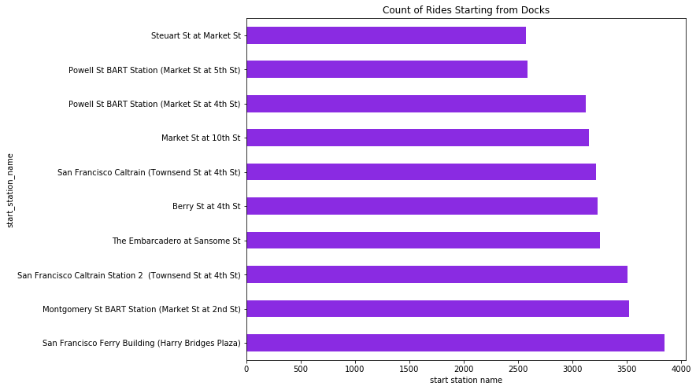
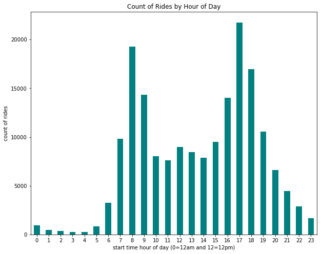

Sample Project Start: Bay Area Bike Share Data
- Jun 24 • 7 min read
- Key Terms: santa clara university
Thought Process
- Construct hypotheses on questions I want answered about this dataset.
- Understand the fields, values, and number of observations.
- Clean only what's needed to answer one question.
- Test your hypothesis by extracting metrics and visualizing results. Try prototyping simple visualizations in Pandas Plot.
- Repeat steps 1-4 as many times as need to answer your questions
- Incorporate a similar dataset for comparison to tell a more interesting story.
- Improve upon your initial visualizations to include the additional dataset and/or tell a more interesting story. Ideally use a level of benchmarking and/or interaction in your visualizations.
Hypotheses
Sorted from easiest to most difficult.
- What dataset?
- Regular vs subscription users
- Popularity of rides by day of week
- Busiest dock?
- Popularity of bike rides by hour of day
- Which routes are most popular?
- Average miles covered on weekdays versus weekend rides
- Any bicycles broken?
New dataset - Trends with BART dataset? Usage of one type of rides versus the other
Import Modules
import pandas as pd
import numpy as np
from datetime import date
import matplotlib.pyplot as plt
%matplotlib inline
Read in Data
df = pd.read_csv('201805-fordgobike-trip-data.csv')
Check Fields of Data
df.info()
<class 'pandas.core.frame.DataFrame'>
RangeIndex: 179125 entries, 0 to 179124
Data columns (total 16 columns):
duration_sec 179125 non-null int64
start_time 179125 non-null object
end_time 179125 non-null object
start_station_id 179125 non-null int64
start_station_name 179125 non-null object
start_station_latitude 179125 non-null float64
start_station_longitude 179125 non-null float64
end_station_id 179125 non-null int64
end_station_name 179125 non-null object
end_station_latitude 179125 non-null float64
end_station_longitude 179125 non-null float64
bike_id 179125 non-null int64
user_type 179125 non-null object
member_birth_year 167376 non-null float64
member_gender 167413 non-null object
bike_share_for_all_trip 179125 non-null object
dtypes: float64(5), int64(4), object(7)
memory usage: 21.9+ MB
Regular versus subscription users
How many people are riding one-time (maybe tourists) versus how many are subscription paying users?
Look at field user_type
df['user_type'].value_counts()
Subscriber 149886
Customer 29239
Name: user_type, dtype: int64
Insight
Far majority of rides come from subscribers
Examine Rides by Day of Week
Convert start_time to datetime type and create new column called start_time_datetime.
Documentation: http://pandas.pydata.org/pandas-docs/stable/generated/pandas.to_datetime.html
df['start_time_datetime'] = pd.to_datetime(df['start_time'])
Create a new column called start_time_day_name to show day name like Thursday or Friday.
Documentation: http://pandas.pydata.org/pandas-docs/version/0.22/generated/pandas.Series.dt.weekday_name.html
df['start_time_day_name'] = df['start_time_datetime'].dt.weekday_name
Check we only have 7 unique values.
Documentation: https://pandas.pydata.org/pandas-docs/version/0.23.1/generated/pandas.Series.unique.html
df['start_time_day_name'].unique()
array(['Thursday', 'Wednesday', 'Tuesday', 'Monday', 'Sunday', 'Saturday',
'Friday'], dtype=object)
Keep records of rides only before May 29th so we have the same number of occurrences for all days of the week.
may_29_2018 = date(2018, 5, 29)
Let's filter by rides before May 29th and get the total count of rides on each day.
Documentation date filters: https://stackoverflow.com/a/41845355/1710454
Documentation groupby: https://pandas.pydata.org/pandas-docs/stable/generated/pandas.DataFrame.groupby.html
Documentation size: https://pandas.pydata.org/pandas-docs/version/0.22/generated/pandas.core.groupby.GroupBy.size.html
df[df['start_time_datetime']<may_29_2018].groupby(by='start_time_day_name').size()
start_time_day_name
Friday 25512
Monday 23510
Saturday 15035
Sunday 13644
Thursday 27542
Tuesday 26528
Wednesday 26705
dtype: int64
Sort series values from least to greatest.
Documentation: https://pandas.pydata.org/pandas-docs/stable/generated/pandas.DataFrame.sort_values.html
df[df['start_time_datetime']<may_29_2018].groupby(by='start_time_day_name').size().sort_values()
start_time_day_name
Sunday 13644
Saturday 15035
Monday 23510
Friday 25512
Tuesday 26528
Wednesday 26705
Thursday 27542
dtype: int64
Create bar plot of count of rides by day of week.
df[df['start_time_datetime']<may_29_2018].groupby(by='start_time_day_name').size().sort_values().plot(kind='barh', figsize=(10, 8), color='salmon')
plt.ylabel("day of week")
plt.xlabel("count of rides")
plt.title("Count of Rides by Day of Week in First 28 Days of May");

Insights
There's a fairly uniform spread of total rides from Monday-Friday, each with about 25000 rides.
There's a uniform spread of rides on Saturdays and Sundays too. Each day had roughly 14000 rides in May.
Busiest Dock
After each ride, bikes are docked at a station. I want to get a sense of the most popular stations bikes start at.
df.groupby('start_station_name').size().sort_values(ascending=False).head(10)
start_station_name
San Francisco Ferry Building (Harry Bridges Plaza) 3851
Montgomery St BART Station (Market St at 2nd St) 3523
San Francisco Caltrain Station 2 (Townsend St at 4th St) 3510
The Embarcadero at Sansome St 3255
Berry St at 4th St 3236
San Francisco Caltrain (Townsend St at 4th St) 3220
Market St at 10th St 3154
Powell St BART Station (Market St at 4th St) 3122
Powell St BART Station (Market St at 5th St) 2590
Steuart St at Market St 2575
dtype: int64
df.groupby('start_station_name').size().sort_values(ascending=False).head(10).plot(kind='barh', color='blueviolet', figsize=(10, 8))
plt.xlabel("count of rides")
plt.xlabel("start station name")
plt.title("Count of Rides Starting from Docks");

Insights
Most rides start from docks located in SoMa - often around BART, Caltrain or popular tourist destinations like the Ferry Building.
Bike Ride Popularity by Hour of Day
Extract the hour value of the datetime and cast it as new column called start_time_hour.
Documentation: http://pandas.pydata.org/pandas-docs/version/0.23/generated/pandas.Series.dt.hour.html
df['start_time_hour'] = df['start_time_datetime'].dt.hour
Verify there's 24 unique values in start_time_hour - should be 0 to 23.
df['start_time_hour'].unique()
array([21, 18, 14, 16, 23, 20, 22, 19, 17, 12, 11, 9, 8, 13, 15, 10, 7,
6, 5, 4, 3, 2, 1, 0])
df.groupby('start_time_hour').size().plot(kind='bar', figsize=(10, 8), color='teal')
plt.ylabel("count of rides")
plt.xticks(rotation=0)
plt.xlabel("start time hour of day (0=12am and 12=12pm)")
plt.title("Count of Rides by Hour of Day");

Insights
Most rides take place during standard work commute hours of 8am and 6pm. It's a bimodal distribution.
Next Steps
- Hone in the hypotheses to a more focused topic - perhaps around just subscribers versus one-time riders, activity of males versus females, rides by weekends versus weekdays, or something else.
- Incorporate additional dataset on ride patterns with BART data or open source weather data.
- Try utilizing more advanced/interesting visualizations to tell a story.